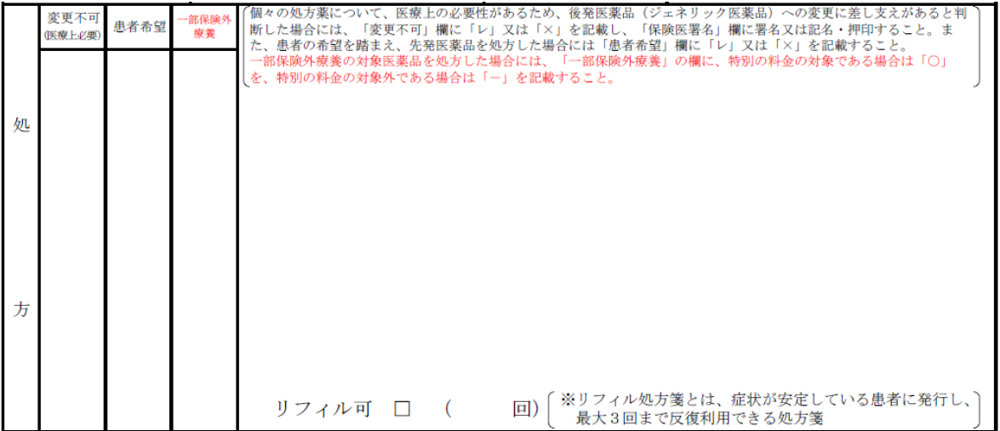
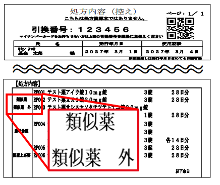

| 変更不可医療上必要 | 患者希望 | 一部保険外療養 | 患者が別に払う料金 |
|---|---|---|---|
| 長期収載品ではない薬 | |||
| ○ | 薬剤費の4分の1 | ||
| ― | なし | ||
| 長期収載品でもある薬 | |||
| ○ | 薬剤費の4分の1 ／ 一部保険外療養が優先され、選定療養の料金はかからない | ||
| × | ― | 先発品と後発品の差額の2分の1※ | |
| × | ― | なし | |

| 変更不可医療上必要 | 患者希望 | 一部保険外療養 | 控えの表示 |
|---|---|---|---|
| 長期収載品ではない薬 | |||
| ○ | 類似薬 | ||
| ― | 類似薬 外 | ||
| 長期収載品でもある薬 | |||
| ○ | 類似薬 | ||
| × | ― | 患者希望 | |
| × | ― | 医療上必要 | |
| 長期収載品の選定療養 | OTC類似薬の一部保険外療養 | |
|---|---|---|
| 負担を求める理由 | 患者の希望で、後発医薬品ではなく先発品を選ぶため 患者の選択による |
OTC医薬品で購入可能な薬であるため 薬の性質による |
| 対象になる薬 | 選定療養の対象となる長期収載品 | 77成分（1,042品目） |
| 何で決まるか | 銘柄 先発品を選んだかどうか |
成分 77成分に該当するかどうか |
| 金額 | （先発品薬価 − 後発品最高薬価）× 1/2 2026年6月から1/4→1/2 |
薬剤費 × 1/4 |
| 料金がかからない人 | 生活保護の患者は対象外。医療上の必要がなければ後発医薬品を調剤する。子どもや公費負担医療の患者にはかかる | 年齢・がん・難病・公費・入院・処置後・長期使用・妊婦・生活保護 |
| 成分 | 品目 |
|---|---|
| アシクロビル | ゾビラックス軟膏5%、ゾビラックスクリーム5% |
| イソコナゾール硝酸塩 | アデスタン腟錠300mg |
| イトプリド塩酸塩 | ガナトン錠50mg |
| エピナスチン塩酸塩 | アレジオン点眼液0.05%、アレジオンLX点眼液0.1% |
| L-カルボシステイン | ムコダインシロップ5% |
| オキシコナゾール硝酸塩 | オキナゾール腟錠100mg、オキナゾール腟錠600mg |
| クロトリマゾール | エンペシドクリーム1% |
| ケトチフェンフマル酸塩 | ザジテンドライシロップ0.1%、ザジテン点眼液0.05% |
| ジクロフェナクナトリウム | ナボールゲル1%、ボルタレンゲル1%、ボルタレンローション1% |
| テルビナフィン塩酸塩 | ラミシールクリーム1%、ラミシール外用液1% |
| 尿素 | ウレパールクリーム10%、パスタロンクリーム20%、ケラチナミンコーワクリーム20% |
| ピコスルファートナトリウム水和物 | ラキソベロン内用液0.75% |
| ビダラビン | アラセナ-A軟膏3%、アラセナ-Aクリーム3% |
| フェキソフェナジン塩酸塩・塩酸プソイドエフェドリン | ディレグラ配合錠 |
| フェルビナク | ナパゲルンローション3% |
| ベタメタゾン吉草酸エステル | リンデロン-V軟膏0.12%、ベトネベート軟膏0.12%、リンデロン-Vクリーム0.12%、ベトネベートクリーム0.12%、リンデロン-Vローション |
| ヘパリン類似物質 | ヒルドイドゲル0.3%、ヒルドイドソフト軟膏0.3%、ヒルドイドクリーム0.3%、ヒルドイドローション0.3%、ヒルドイドフォーム0.3% |
| ベポタスチンベシル酸塩 | タリオン錠5mg、タリオン錠10mg、タリオンOD錠5mg、タリオンOD錠10mg |
| ペミロラストカリウム | アレギサール点眼液0.1% |
| ベルベリン塩化物水和物・ゲンノショウコエキス | フェロベリン配合錠 |
| モメタゾンフランカルボン酸エステル水和物 | ナゾネックス点鼻液50μg56噴霧用、ナゾネックス点鼻液50μg112噴霧用 |
| ロキソプロフェンナトリウム水和物 | ロキソニン錠60mg |
| ロラタジン | クラリチン錠10mg、クラリチンレディタブ錠10mg、クラリチンドライシロップ1% |
| ラメルテオン | ロゼレム錠8mg |